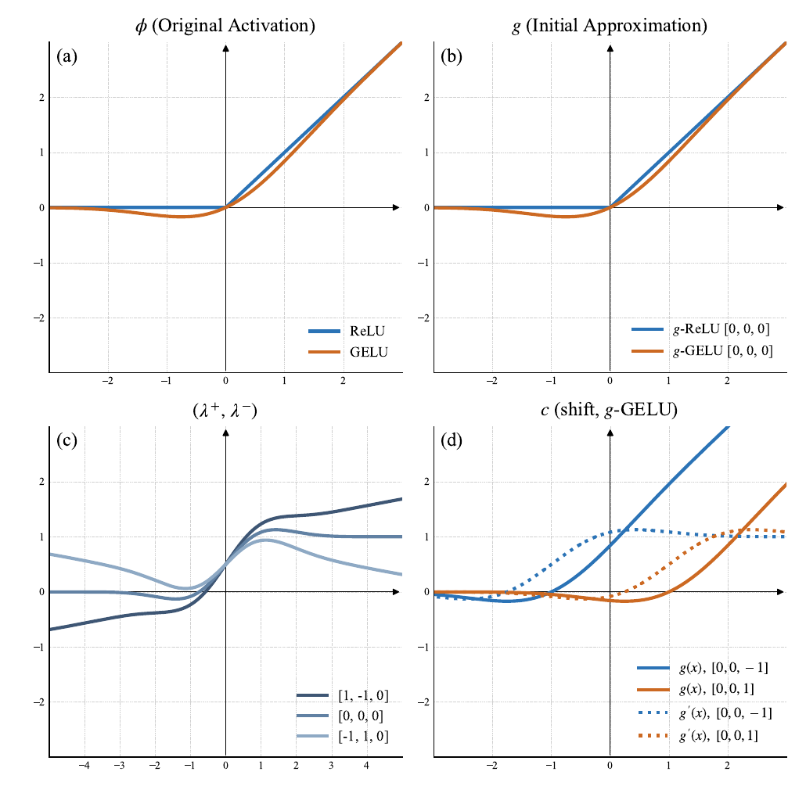

Activation adaptation

AcTTA makes the activation center and the positive and negative slopes learnable. Zero-initialized activation parameters recover the original pretrained activation. At test time, these parameters adjust to target inputs while the backbone weights remain fixed.
Abstract
Test-time adaptation (TTA) aims to mitigate performance degradation under distribution shifts by updating model parameters during inference. Existing approaches have primarily framed adaptation around affine modulation, focusing on recalibrating normalization layers. This perspective, while effective, overlooks another influential component in representation dynamics: the activation function.
We revisit this overlooked space and propose AcTTA, an activation-aware framework that reinterprets conventional activation functions from a learnable perspective and updates them adaptively at test time. AcTTA reformulates conventional activation functions (e.g., ReLU, GELU) into parameterized forms that shift their response threshold and modulate gradient sensitivity, enabling the network to adjust activation behavior under domain shifts.
This functional reparameterization enables continuous adjustment of activation behavior without modifying network weights or requiring source data. Despite its simplicity, AcTTA achieves robust and stable adaptation across diverse corruptions. Across CIFAR10-C, CIFAR100-C, and ImageNet-C, AcTTA consistently surpasses normalization-based TTA methods.
Our findings highlight activation adaptation as a compact and effective route toward domain-shift-robust test-time learning, broadening the prevailing affine-centric view of adaptation.
Results
| Dataset | Backbone | TENT | AcTTA-TENT |
|---|---|---|---|
| CIFAR-10-C | WRN-28 | 18.51 | 17.03 |
| CIFAR-100-C | WRN-40 | 35.25 | 33.81 |
| ImageNet-C | ResNet-50 (BN) | 66.50 | 64.95 |
| ImageNet-C | ViT-B/16 (LN) | 53.85 | 51.79 |
Additional backbones, adaptation objectives, and ablations are reported in the paper.
Code
Code, configurations, and reference results are available on GitHub. Supported experiments cover CIFAR-C with Wide ResNets and ImageNet-C with ResNet-50 and ViT-B/16, including activation-depth sweeps at 0, 25, 50, 75, and 100%.
At 50% activation depth, ResNet-50 adapts the first 25 of 49 independent ReLU calls; ViT-B/16 adapts the first 6 of 12 MLP GELUs. The main CNN configuration freezes BN affine parameters, while the main ViT configuration jointly adapts LN affine parameters and activations.
BibTeX
@article{kim2026actta,
title={AcTTA: Rethinking Test-Time Adaptation via Dynamic Activation},
author={Kim, Hyeongyu and Han, Geonhui and Hwang, Dosik},
journal={arXiv preprint arXiv:2603.26096},
year={2026}
}